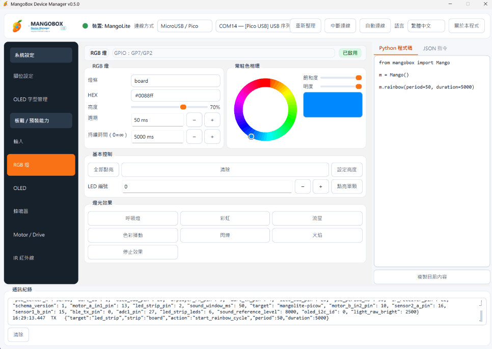

裝置連線與識別
支援 MangoX2 + Pico／Pico W／Pico 2 W，以及 MangoLite + Pico W／Pico 2 W。可使用 Runtime UART 或 MicroUSB / Pico，並讀取裝置與 Runtime identity。
 MangoBox裝置管理器
MangoBox裝置管理器MangoBox Device Manager 是日常設定與裝置管理工具，用來連線 MangoX2／MangoLite、讀取 Runtime 狀態、管理模組啟用、GPIO／Pin、校準，以及支援範圍內的即時讀值與監看。韌體更新、Clean Flash、Factory Reset、Recovery／Deep Rescue 則由 Hardware Lab 負責。

支援 MangoX2 + Pico／Pico W／Pico 2 W，以及 MangoLite + Pico W／Pico 2 W。可使用 Runtime UART 或 MicroUSB / Pico，並讀取裝置與 Runtime identity。
管理模組 Enable、GPIO／Pin、設定同步與支援模組的校準流程。ADC 顯示與板上絲印一致，例如 GP26 (AD0)、GP27 (AD1)、GP28 (AD2)。
依 Runtime capability 提供即時控制、Read Once／Monitor 與設定預覽，並可在繁體中文與 English 間即時切換。